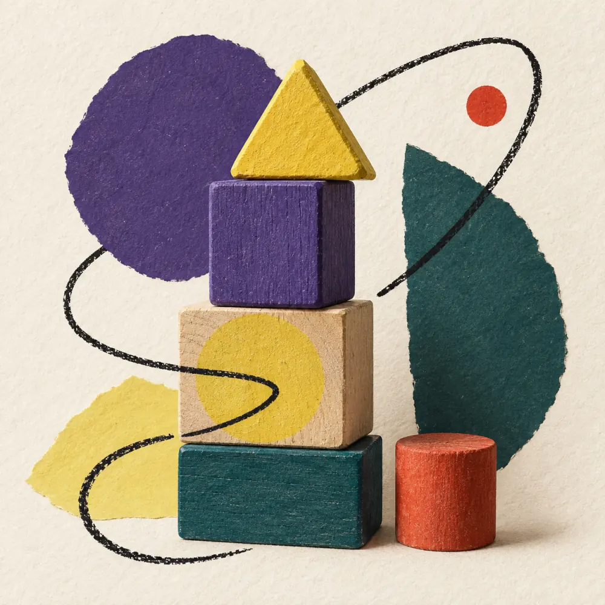

Thinking for themselves
Children learn to think for themselves, to recognise connections, to develop their own paths to a solution and to use mistakes as chances to learn.
The Learning Bus is a preventive, pedagogically grounded programme for children in their early learning years.
The Learning Bus strengthens children to shape their personal development with confidence, independence and an eye to the future.


Why the Learning Bus
That is why we do not wait to look until a child is already struggling with reading, writing or arithmetic.
Learning builds on many fundamental abilities: perception, attention, language, early mathematical skills, motor skills and self-regulation.
These foundations can be strengthened early, playfully, with joy and without pressure, often quite incidentally and without it feeling like ‘learning’ to the children. Whether making things, moving, sorting, rhyming, experimenting or playing: there are countless ways to accompany children in their development and to strengthen the foundations of learning.
For us, early-years support does not mean pushing school ever further forward. It means giving children a stable foundation on which later learning can build. Not waiting until deficits become visible.
The Learning Bus is guided by core competencies such as emotional intelligence, creativity, the ability to communicate, and critical, connected thinking.
Children learn to think for themselves, to recognise connections, to develop their own paths to a solution and to use mistakes as chances to learn.
They gain strategies for actively engaging with material that is not immediately exciting, and for staying with it through reluctance.
In parallel, gaps in basic language and mathematical skills can be addressed and consolidated in a targeted way.
Early German support helps children from the age of three to build language foundations, express themselves more confidently and take part in lessons with greater trust.
The programme strengthens children's self-confidence, their resilience and their readiness to learn independently.
The goals
Getting-to-know meeting with the parents and the child
Individual early-years support (60 minutes, one to one or in pairs; planned for at least six months, cancellable at any time)
Building fundamental abilities: perception, attention, language, early mathematical skills, motor skills and self-regulation
A trusting, protected learning space
Lernkiste for personally documenting learning progress
Talks with parents and support for child and parents as needed, including accompaniment to meetings
Small groups during school holidays to consolidate and deepen a wide range of abilities
Fees
Fees are per 60-minute lesson, per child in the pair setting. We discuss which rate fits in the introductory conversation.
| Rate | One-to-one | In pairs per child |
|---|---|---|
| Supported rateFor families where money is tight. Made possible by people who invest in children. | CHF 10 | CHF 10 |
| ReducedFor families who cannot carry the full fee. | CHF 75 | CHF 60 |
| True costCovers the full cost of a place: the lesson, preparation, talks with parents and quality assurance. | CHF 100 | CHF 75 |
| SolidarityMore than a place costs. The surplus goes entirely to supported places. | CHF 125 | CHF 90 |
If money is tight at home, simply say so. It is not an obstacle, and it stays between us.
Our learning mentors work reflectively, empathetically and with solid professional grounding. Thanks to their varied professional backgrounds, children have access to a range of well-matched adults who can connect with their individual interests and needs.
The quality of the programme is safeguarded and continuously developed through team meetings, professional exchange, evaluation and further training.
Choose an available time for a conversation of 60 minutes.
{% include "lernbus-calendar.njk" %}Contact
For questions about the Lernbus, send us a message. We will get back to you within a few days.
info@lernbus.chThis form opens your email app with your message to info@lernbus.ch. You can review and send it there.
Not in the usual sense. We work on gaps where there are gaps. Above all, though, it is about your child learning gladly and independently. That lasts longer than any single topic.
No. The Learning Bus is open to every child, whatever they bring with them and wherever they come from. We deliberately begin early, to preserve and strengthen confidence and the joy of learning.
Young children learn through play and within a secure relationship, and that is exactly where we begin. The point is that learning stays joined to joy from the start, and that it can happen in many different ways.
Because trust takes time. The effect does not come from any single exercise, but from a reliable relationship and a genuine enthusiasm for the child and their path of learning. The six months are a shared plan; the support can be ended at any time.
Learning mentors from a range of professional backgrounds. They are selected carefully and to the highest standards. Quality is maintained continuously through team meetings, professional exchange, evaluation and further training.
Both are possible. Some children concentrate better alone, others come alive with a second child there, because explaining and listening are themselves ways of learning. What suits your child we decide together in the introductory conversation. In both cases the support is planned for at least six months; it can be ended at any time.
In the holidays there are small groups for children the Lernbus supports. They deepen and consolidate what was worked on during the term.
Who is behind it
The Learning Society is an association based in Basel. It fosters the natural curiosity and the will to learn of children and young people. The board works on a voluntary basis.